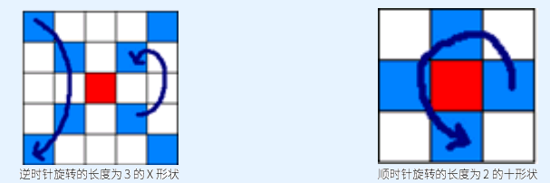

目录哥最喜欢和 XYF 玩了。但是目录哥发现 XYF 被邪恶的DBJ 给抓走了。于是目录哥开始了英雄救美的旅程。目录哥通过自己高超的黑客技术，探明 XYF被关在了吉萨金字塔群底下（坐标：29°58′43.41″N 31°8′5.06″E）。于是目录哥带上了神犬扎昆，带上军需官巨胖，坐上猴猴猴家开的泛埃及航空公司的飞机，前往埃及。到达吉萨金字塔群底下后，目录哥发现一个由 T 层棋盘组成的塔状结构，初始时目录哥在塔顶，而 XYF 在塔底。对于每一层棋盘，目录哥都需要把下一层的钥匙移动到自己手上，才能进入下一层.对于每一层棋盘，目录哥以自己所在的格子为中心(0,0)，在每一层上建立了平面直角坐标系，而下一层的钥匙在(X,Y)处。现在的任务就是使用各种咒语，将下一层的钥匙移动到目录哥手上。可是由于记载咒语的石板年代太久远了，石板上的字由于风化而有所磨损，所以目录哥现在能看清楚的只有 X 咒语和十咒语。每念一次咒语，可以选择某坐标格为中心，扩展出一个长度为 L 的 X 形状或者十形状，并且顺时针或者逆时针旋转 90 度，每个格子上的所有物品会被一起旋转。详细描述如图，红色格子为中心，4 个方向扩展出的格子数包括中心格子为长度，箭头表示物品的转移路径。

为了尽快找到XYF，目录哥想知道，每层至少要念多少个咒语才能完成任务，但是似乎扳手指数不出来，所以只好求助于过去世界的你。如果目录哥无法找到XYF，如果无法完成任务，请输出“Poor MLG！”